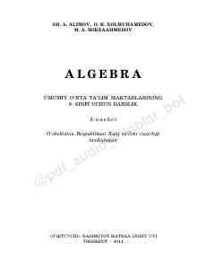

A99-sinf o'quvchilari uchun algebra fanidan o'quv qo'llanma va darslik.
Ushbu darslik umumiy o'rta ta'lim maktablarining 9-sinf o'quvchilari uchun mo'ljallangan bo'lib, algebra fanining asosiy mavzularini qamrab oladi. Kitobda kvadrat funksiyalar, tenglamalar va ularning tatbiqlari nazariy hamda amaliy misollar yordamida tushuntirilgan.